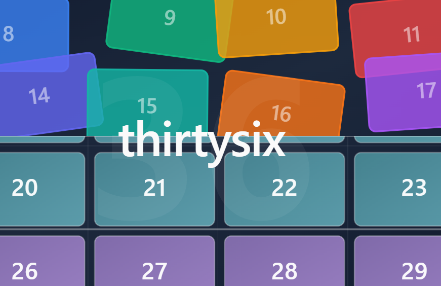
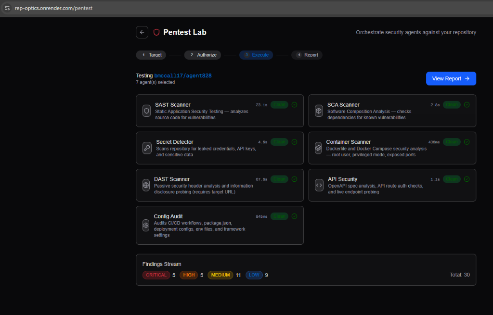

loading...
mapping ancient wisdom to modern ideas. find the easter eggs.

36 questions designed to accelerate closeness through reciprocal vulnerability. based on arthur aron's 1997 study.

orchestrate security agents against your repositories. automated pentesting + AI-powered vulnerability analysis.
ranked-choice consensus for groups. because "majority rules" is a lie.
multiplayer flock strategy game, cross-platform desktop+VR.
co-founder & technical producer. building a resilient "production os" for high-stakes volunteer organizations.
translating 2d collaboration into 3d spatial intuition. 40% increase in repeat engagement.
from 1993 internships to modern llms. a lifetime of conversation with machines.
ruthless optimization for fundraising. 30% reduction in dev cycles.
exploring human-ai interaction boundaries in the workplace.
the "production" side of me: producer, talent, executive credits across film, esports casting, podcast host/producer. yes, that's my voice on the podcast.
exploring the future of immersive technologies.
finding the 10 most important people to meet next.
practicing presence and the art of listening.